noodle
· ♥ 452 likes · 💬 6
Imagine hearing a seemingly normal " did you know?" Segment that just lists off all of the most despicable things the company has done over the last few months immediately followed by hamster dance
Imagine hearing a seemingly normal " did you know?" Segment that just lists off all of the most despicable things the company has done over the last few months immediately followed by hamster dance
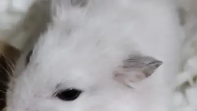
if sm64 mario is a deer or hamster, then 64ds is a stubborn old mule
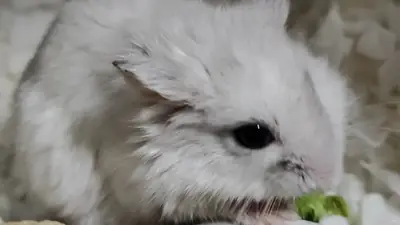
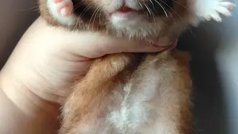
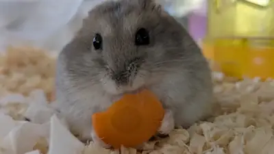
color me surprised, too, darth i am a hamster, though and tbh, and we hamsters tend not to involve ourselves very much in such things as international intrigue.
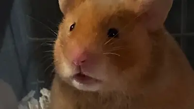
貯蓄庫で寝ちゃったアップル🐹💤 ご飯を一生懸命貯めて、そこで食べていたら……いつの間にか夢の中🤣 ご飯に囲まれて眠るなんて、幸せすぎるでしょ❤️ ママは貯蓄量に悩んでいるのに、本人はいたってマイペース😂 #ハムスター #アップル
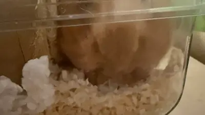
Me watching Joe drive over 100mph in a Ford Bronco with Melissa unbuckled in the passenger seat
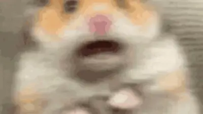
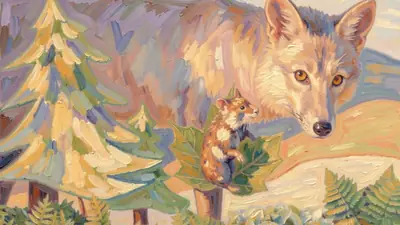
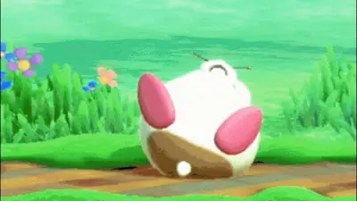
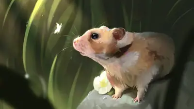
momb's still on the zoom, but i just had to hamsters dance to La Isla Bonita! #Paws4Music
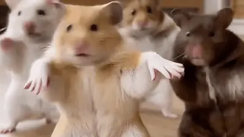
My baby boy Earl being a brave boy, after all my panic when a claw of his broke and bled all over. The vet says he's very cooperative and polite, and that he'll be just fine. Just gotta keep him quarantined for 5 days, to ensure he doesn't get an infection. #MeetTheMischief #PetRat #EarlMischief
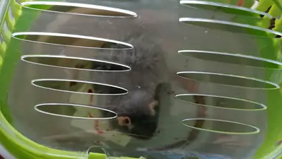
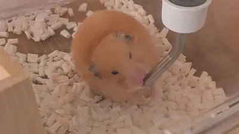
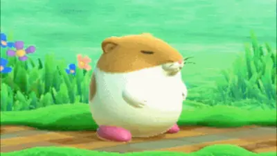
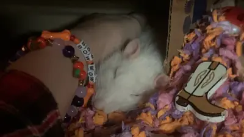
 YouTube
YouTube
 YouTube
YouTube
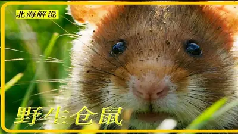
YouTube YouTube
YouTube
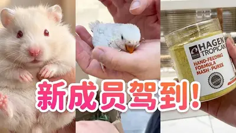
YouTube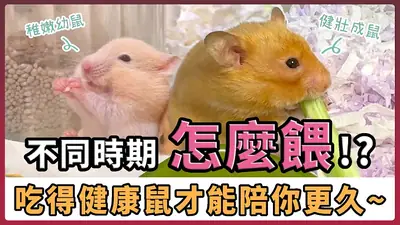
YouTube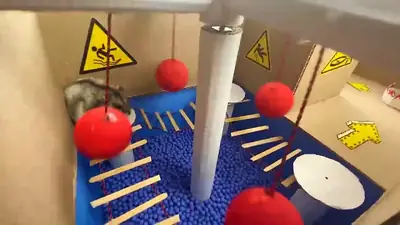
YouTube